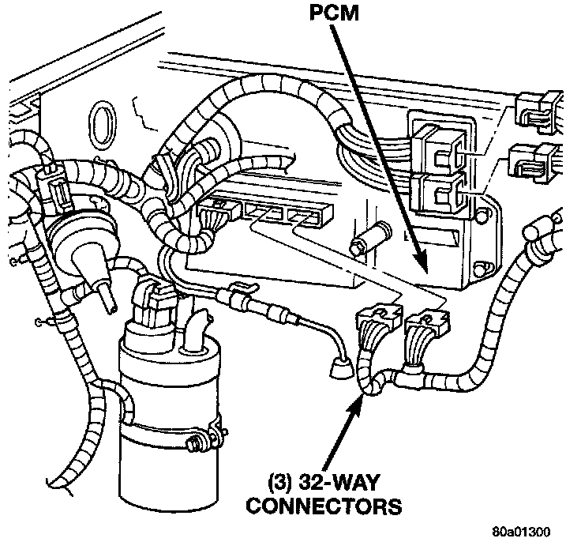
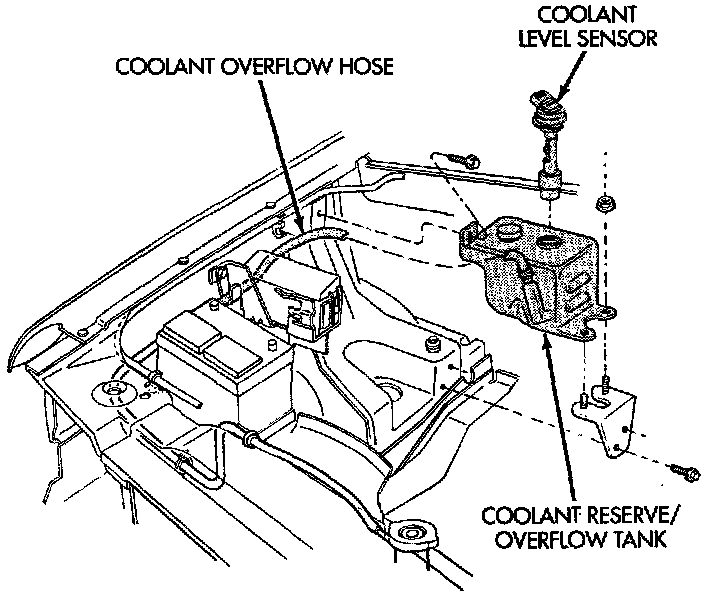
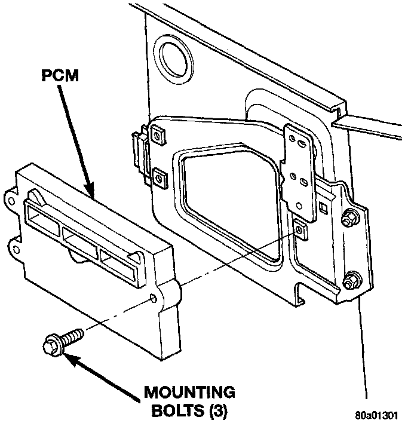

Engine Control Module: Service and Repair
POWERTRAIN CONTROL MODULE (PCM)Fig. 77 PCM:

The Powertrain Control Module (PCM) is located on the cowl panel in the right/rear side of the engine compartment (Fig. 77).
REMOVAL
1. Disconnect the negative battery cable at battery
2. Remove cover over electrical connectors. Cover snaps onto PCM.
Fig 78 Coolant Reserve Tank Mounting:

3. Remove the coolant reserve/overflow tank (one bolt and two nuts) (Fig. 78).
4. Carefully unplug the three 32-way connectors at PCM.
Fig. 79 PCM Mounting:

5. Remove the three PCM mounting bolts (Fig. 79).
6. Remove PCM.
INSTALLATION
1. Check the pins in the three 32-way electrical connectors for damage. Repair as necessary.
2. Install PCM. Tighten three mounting bolts to 1 Nm (9 in. lbs.) torque.
3. Install three 32-way connectors.
4. Install cover over electrical connectors. Cover snaps onto PCM.
5. Install coolant reserve/overflow tank.
6. Connect negative cable to battery.